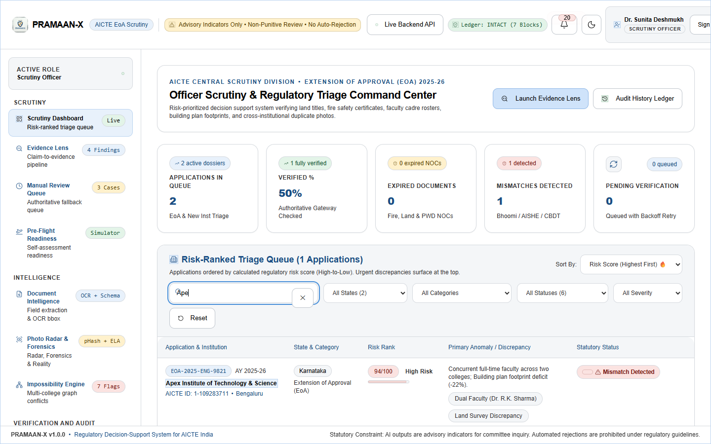
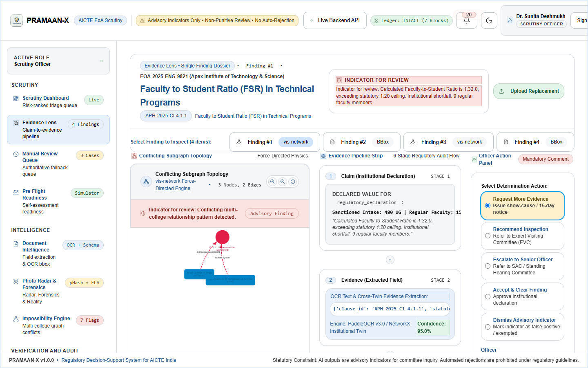
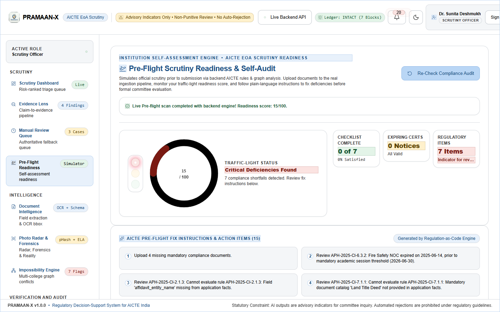
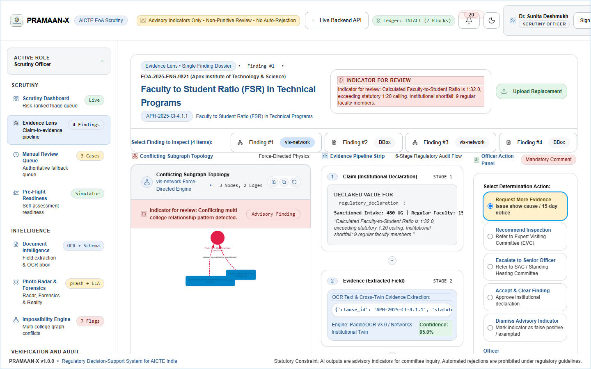
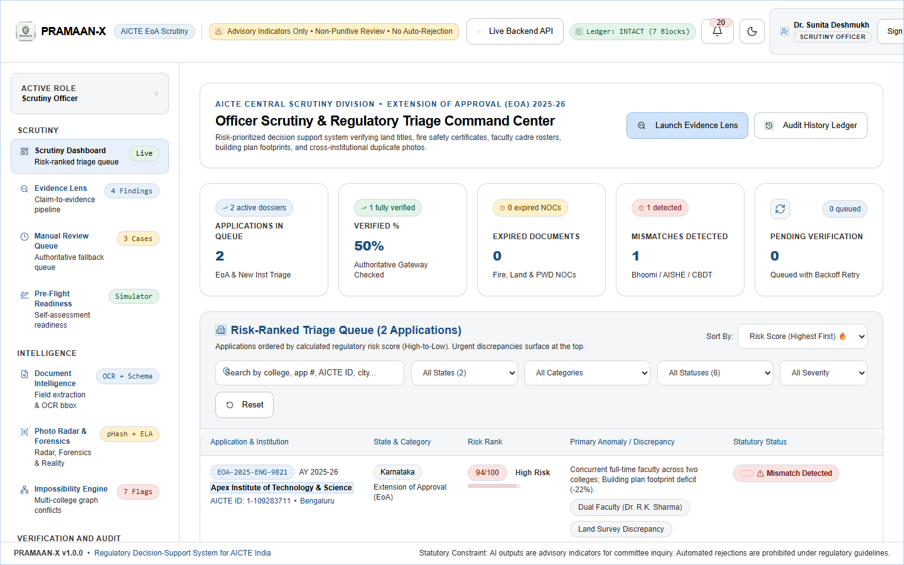
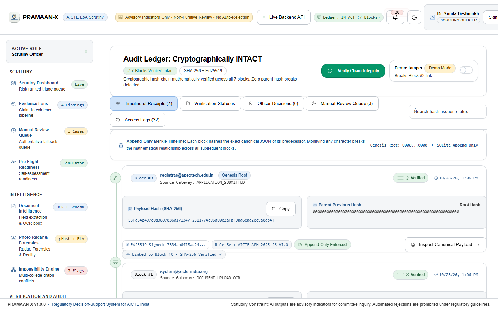

Comprehensive Multi-Modal Scrutiny, Visual Forensics & Twin Graph Architecture
PRAMAAN-X empowers regulatory scrutiny officers with automated claim extraction, perceptual photo deduplication (<250ms FAISS lookup), cross-college faculty and land collision graphs, and tamper-evident SHA-256 Merkle audit receipts.
Multi-Tier System Architecture Diagram
High-availability decoupled services with strict separation of concerns
React 19 + Tailwind Client SPA
WCAG 2.1 AA accessible scrutiny shell supporting 375px mobile to 1920px+ ultra-wide screens. Implements role-based UI perspectives, live bounding box overlays, and Vis-Network graphs.
FastAPI Asynchronous Gateway
Asynchronous Python 3.11+ ASGI backend with JWT Bearer authentication, RBAC capability guardrails, and cryptographic event interception.
PyMuPDF + Tier-2 ML Classifier
Ultra-fast native PDF text & table vector extraction (<450ms/file). TF-IDF + Logistic Regression categorizes certificates into statutory handbook schemas.
Perceptual Radar & FAISS Index
Multi-hash pHash & dHash matching with 7 invariant geometric perturbations. FAISS vector index provides <250ms visual deduplication across 12,000+ national campus photos.
NetworkX Impossibility Engine
Heterogeneous multi-college knowledge graph detecting concurrent faculty employment across distant campuses (>300km) and overlapping survey parcel allocations.
SHA-256 Merkle Ledger
Append-only cryptographic receipt chain sealing officer determinations, OCR proofs, and external registry responses. Instant broken-chain tamper detection (<5ms).
Visual Evidence & Screen Verification Showcase
Verified high-resolution screenshots capturing live system behavior across all scrutiny modules

Primary TriageRisk-Ranked Triage Queue
Dynamic triage table prioritizing institutions by deficiency severity with instant action determination modals.

Evidence LensClaim-to-Evidence OCR Bounding Boxes
Side-by-side inspection showing highlighted document regions, handbook clause rules, and audit receipt linkages.

Self-AuditPre-Flight Readiness Scorecard
Institutional self-assessment sandbox offering non-punitive deficiency previews before final application locking.

Photo ForensicsPhoto Radar & Forensic ELA Scanner
pHash nearest neighbor cluster matching with Error-Level Analysis heatmaps identifying digital manipulation.

Twin GraphCross-College Twin Graph Impossibility
Visual graph mapping simultaneous faculty registration and shared land survey numbers across colleges.

Audit LedgerSHA-256 Merkle Ledger & Tamper Check
Chronological cryptographic receipts with interactive tamper simulation demonstrating instant chain invalidation.
Statutory Safeguards & AI Ethics Architecture
Engineered in strict accordance with administrative natural justice principles. Every AI recommendation is strictly advisory, ensuring human scrutiny officers retain authoritative responsibility.
Algorithmic outputs are restricted to "Indicator for review". Discrepancies never result in automatic disqualification without full opportunity to be heard.
Strict role boundaries separate Scrutiny Officers, Senior Officers, Independent Auditors, System Admins, and Institutional Applicants.
All decision receipts are cryptographically signed and exportable as tamper-evident evidence packs for appellate tribunals.